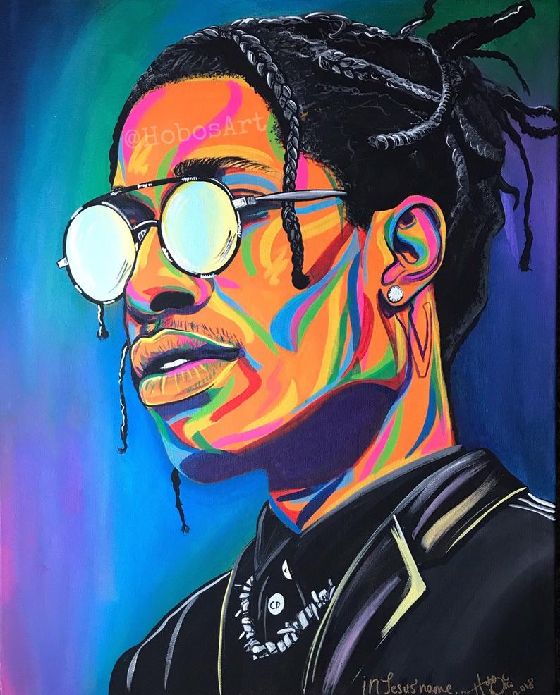
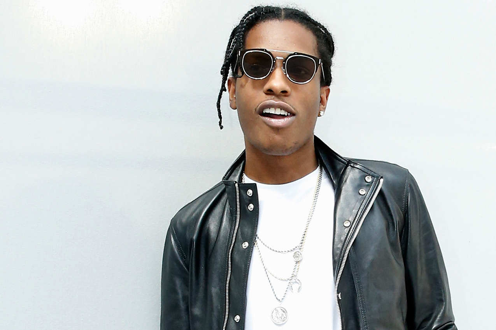
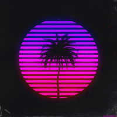

A$AP ROCKY
Детство и юность
- Раким Майерс родился 3 октября 1988 года в Гарлеме, Нью-Йорк. Майерс был назван в честь рэпера Ракима. Его отец родом из Барбадоса, а мать — афроамериканка. Вдобавок у Ракима имеется старшая сестра, Эрика Би Майерс. Двоюродный брат Майерса, Тарик Девега, в настоящее время является участником хип-хоп коллектива A$AP Mob и выступает под псевдонимом ASAP Nast. Раким начал читать рэп в возрасте восьми лет, когда он переехал в Гаррисберг, столицу штата Пенсильвания. Он учился писать стихи при помощи своего старшего брата, у которого он впоследствии и вдохновился сделать себе французские косички. Когда Ракиму было 12 лет, его отец был отправлен в тюрьму в связи со сбытом наркотиков; отец Ракима умер в 2013 году. В возрасте 14 лет его брат был убит в Гарлеме. Смерть брата воодушевила Ракима отнестись более серьёзно к написанию собственных стихов. В возрасте 15 лет, в Бронксе, Раким начал продавать кокаин.

Карьера
2007 — 2011: Live. Love. A$AP
- В 2007 году Раким вступает в это сообщество A$AP Mob, члены которого связаны между собой общими интересами: музыкой, модой, дизайном и велосипедами. Основателями A$AP Mob являются A$AP Yams, A$AP Bari и A$AP Illz. В 2011 году Раким обнародует малоизвестный микстейп под названием Deep Purple, куда входит его дебютный сингл «Purple Swag». В том же году Раким загружает в интернет сингл «Peso», который впоследствии неоднократно проигрывается на одной из самых известных нью-йоркских радиостанций Hot 97. Осенью 2011 Раким публикует микстейп Live. Love. A$AP, который получает высокие оценки музыкальных критиков, а его имя спустя некоторое время фигурирует в заголовках газеты The New York Times. Позже он подписывает контракт с RCA Records и Polo Grounds Music. Зимой 2012 Раким входит в число кандидатов на победу в номинации BBC's Sound of 2012.
- Зимой 2012 Раким вместе с Кендриком Ламаром присоединяется к гастрольному туру Дрейка «Club Paradise Tour», а в начале июля выступает на музыкальном фестивале Pitchfork Music Festival. Телевизионный дебют артиста назначается на 20 июля на ночном шоу Late Night with Jimmy Fallon[en], однако позже дебют переносится на 21 августа. Причиной перенести дату выступления артиста послужило то, что за день до изначально поставленной даты артист был обвинён в причастности к драке на Манхэттене с артистом iRome. В начале сентября того же года Раким вместе с Рианной исполняет песню «Cockiness (Love It)» на шоу MTV Video Music Awards.
Весной 2012 артист публикует первый сингл с дебютного альбома под названием «Goldie». В свою очередь в конце лета A$AP Mob обнародуют в интернете для бесплатного скачивания микстейп Lords Never Worry. В период с сентября по ноябрь Раким отправляется в гастрольный тур по США Long Live ASAP Tour в поддержку своего будущего дебютного студийного альбома. В качестве тех, кто будет разогревать публику перед основным шоу, выдвинулись Скулбой Кью, Дэнни Браун и A$AP Mob. Long. Live. A$AP вышел в свет 15 января 2013 и стартовал с первого места в хит-параде Billboard 200, продав в общей сложности в первую неделю 139 тысяч копий. 16 марта 2015 пластинка получила золотой сертификат. Весной 2013 Раким, в интервью радио-станции Wild 94.9, прокламировал, что работает над инструментальным альбомом. Позже летом, в интервью MTV, он завил, что инструментальный альбом готов и состоит из эмбиента и называется Beauty & The Beast: Slowed Down Sessions (Chapter 1).
Весной 2014 Раким анонсирует, что ведёт работу над своим вторым студийным альбомом A.L.L.A. (аббревиатура от At. Long. Last. A$AP), который станет продолжением его первого альбома — Long. Live. A$AP. В начале июня Раким совместно с A$AP Ferg, Nast и Twelvyy выпускает сингл «Hella Hoes». К празднику Нового Года, Раким публикует ведущий сингл «Pretty Flacko 2» с предстоящего альбома At. Long. Last. A$AP. Спустя 17 дней после выхода трека, ментор и коллега Ракима, Стивен «A$AP Yams» Родригез погибает в возрасте 26 лет. Как сообщается, причиной смерти артиста послужило апноэ во сне, что вызвало асфиксию и мекониевую аспирацию.
В начале апреля хип-хоп исполнитель представил песню «M'$», а месяцем спустя, в одной из социальных сетей, публикует обложку грядущего альбома. В тот же самый день артист публикует альтернативную обложку альбома и предстаёт общественности новый трек под названием «Everyday». Вдобавок Раким анонсирует дату выхода альбома: 2 июня 2015 года; однако примерно за неделю альбом был слит в интернет, что побудило артиста перенести выход альбома на 26 мая. В первую неделю альбом, в США, был продан в 146 тысяч цифровых копий и стартовал с первой строчки в Billboard 200.
28 августа 2017 года, в интервью журналу Complex, Раким подтвердил, что собирается выпустить свой третий студийный альбом до конца 2018 года. 25 мая 2018 года Раким представил третий студийный альбом Testing, записанный при содействии Skepta, Sean Combs, Kid Cudi, Moby, Kodak Black и многих других. Пластинка получила средние оценки от музыкальных критиков.
My YouTube chenel "kanlyshape"
